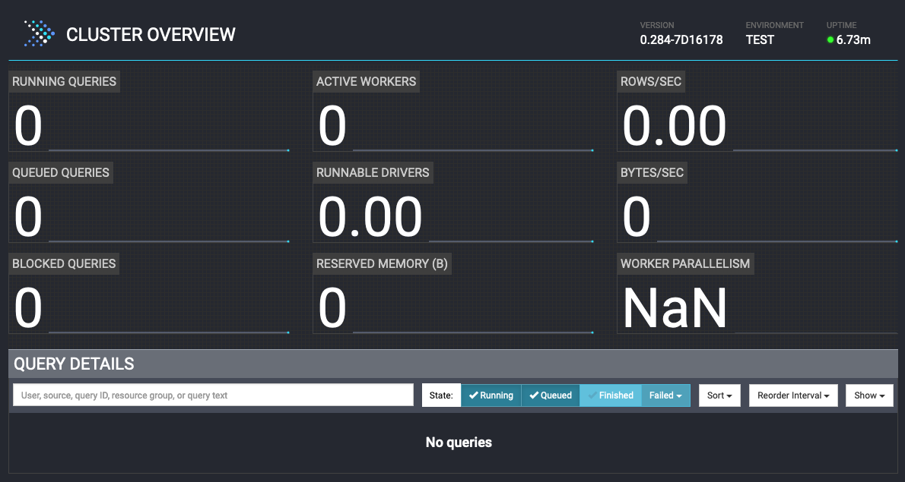
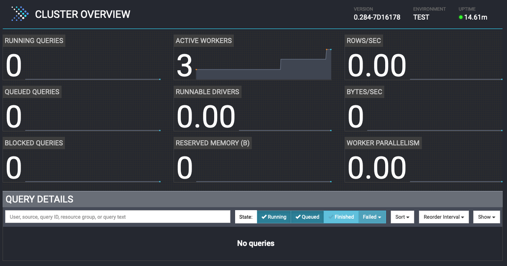

Set up Presto¶
In this section, you will: - Create a docker network to connect all containers that you are going to create - Set up a Presto cluster including - A coordinator node - 3 worker nodes
This section is comprised of the following steps:
- Create a Presto cluster including:
- A coordinator node
- 3 worker nodes
- Check Presto UI
1. Create a Presto cluster¶
Run the following command to bring up a Presto cluster which has 1 coordinator node and 3 worker nodes
The command pulls the latestprestodb/presto image and other images needed in the ./docker-compose.yml Docker Compose file.
You would see the outputs similar to the following:
[+] Running 7/7
✔ Container zeppelin Running 0.0s
✔ Container worker3 Running 0.0s
✔ Container presto-mysql Running 0.0s
✔ Container worker1 Running 0.0s
✔ Container presto-mongo Running 0.0s
✔ Container worker2 Running 0.0s
✔ Container coordinator Running 0.0s
2.1 Presto Coordinator¶
The coordinator is running in a container named coordinator using the prestodb/presto:latest image with the config.properties and jvm.config configurations under the config/coordinator directory along with the catalog settings in the ./catalog directory.
Here are the settings for the coordinator:
coordinator=true
node-scheduler.include-coordinator=false
http-server.http.port=8080
discovery-server.enabled=true
discovery.uri=http://localhost:8080
coordinatorproperty defines if the Presto server acts as a coordinator or not. Use valuetruefor a coordinator.node-scheduler.include-coordinatorproperty defines if the Presto server acts as a worker as well as a coordinator. Use valuefalseto not accept worker tasks.http-server.http.portproperty defines the port number for the HTTP server.discovery-server.enabledproperty defines if the Presto server acts as a discovery server to register workers.discovery.uriproperty defines the discovery server's URI which is itself for the coordinator.
You can use the following command to check the logs of the coordinator:
If the Presto server is up and running properly, the last lines of the outputs would like the following:
2023-11-13T23:06:41.958Z INFO main com.facebook.presto.storage.TempStorageManager -- Loading temp storage local --
2023-11-13T23:06:41.963Z INFO main com.facebook.presto.storage.TempStorageManager -- Loaded temp storage local --
2023-11-13T23:06:41.989Z INFO main com.facebook.presto.server.PrestoServer ======== SERVER STARTED ========
You can check the Presto UI by opening a browser with this URL: http://localhost:8080
Note
If you run the lab on a remote server, replace the localhost with the server's IP address.
For example http://192.168.0.1:8080
The page would look like this: 
2.2 Worker Node - worker1¶
The 1st worker node is named worker1 and using the configurations under the conf/worker1 directory with the following settings:
coordinatorproperty is assigned the value offalsefor a worker node.http-server.http.portproperty defines the port number for the HTTP server. Since we are running a coordinator and 3 worker nodes on the local machine, need to use a different port for each node.discovery.uriproperty points to the discovery server on the coordinator.
You can use the following command to check the logs of the first worker node:
If the worker node is up and running properly, the last lines of the outputs would like the following:
2023-11-14T04:03:22.246Z INFO main com.facebook.presto.storage.TempStorageManager -- Loading temp storage local --
2023-11-14T04:03:22.251Z INFO main com.facebook.presto.storage.TempStorageManager -- Loaded temp storage local --
2023-11-14T04:03:22.256Z INFO main com.facebook.presto.server.PrestoServer ======== SERVER STARTED ========
Check the Presto UI again: http://localhost:8080. The number of active workers became 1:
Note
If you run the lab on a remote server, replace the localhost with the server's IP address.
For example http://192.168.0.1:8080

2.3 Worker Node - worker2¶
The 2nd worker node is named worker2 and using the configurations under the conf/worker2 directory with the following settings:
The settings are almost the same as `worker1, except for the port number:
http-server.http.portproperty defines the port number for the HTTP server. Since we are running a coordinator and 3 worker nodes on the local machine, need to use a different port for each node.
You can use the following command to check the logs of the first worker node:
Check the Presto UI again: http://localhost:8080. The number of active workers became 2:
Note
If you run the lab on a remote server, replace the localhost with the server's IP address.
For example http://192.168.0.1:8080

2.4 Worker Node - worker3¶
The 3rd of the worker node is named worker3 and using the configurations under the conf/worker3 directory with the following settings:
The settings are almost the same as worker1 and worker2, except the port number:
http-server.http.portproperty defines the port number for the HTTP server. Since we are running a coordinator and 3 worker nodes on the local machine, need to use a different port for each node.
You can use the following command to check the logs of the first worker node:
3. Access the Presto UI on the Coordinator¶
You have successfully set up a Presto cluster with a coordinator and 3 worker nodes. Check the Presto UI again:
http://localhost:8080. The number of active workers became 3:
Note
If you run the lab on a remote server, replace the localhost with the server's IP address.
For example http://192.168.0.1:8080

Well done! Let's move to the next lab to set up data sources.